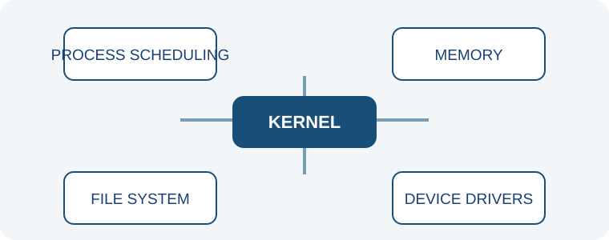

An operating system coordinates the computer. It gives programs the resources they need while helping the whole system stay responsive and organized.
The operating system decides which program gets processor time and when. It switches between tasks quickly, making it seem as though many programs run at once.
Each running program needs space for its data. The operating system tracks memory use and helps prevent programs from interfering with one another.
Directories and file systems organize stored information. The operating system helps create, find, and protect files.
Device drivers help the operating system communicate with hardware such as keyboards, screens, printers, and network adapters.
The kernel is the central part of an operating system. It handles essential tasks such as managing hardware access and coordinating running programs.